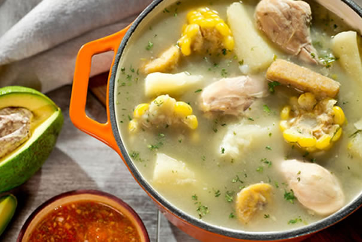

Sancocho de gallina (Regiones Andina y Pacífica )
15/05/2019, Cali 
Ingredientes
14 tazas de agua
1 gallina gorda y despresada
1 taza de cola de res picada
2 tallos de cebolla larga enteros
2 tallos de cebolla larga picados
2 cebollas cabezonas peladas y picadas
2 tomates verdes picados
4 plátanos verdes una libra de yuca pelada y partida en trozos
5 hojas de cilantro cimarrón Sal, comino y pimienta al gusto --Azafrán o color
2 cucharadas de cilantro de Castilla, picado fino
Preparación
Se hace un picadillo con las cebollas largas picadas, los tomates verdes y las cebollas cabezonas, se machacan y se ponen a hervir en el agua, con la cebolla larga entera y la cola de res.
Se tapa la olla y se lleva a fuego alto por una hora. Se le agregan las presas de gallina y el plátano, que debe ser pelado y partido en el momento de agregarlo al caldo. Se baja a fuego medio, se tapa y se deja a cocinar por 30 minutos. Se saca la cebolla entera, se le agrega la yuca, dejando que se cocine 20 minutos con la sal, la pimienta, el comino, el color y el cilantro cimarrón.
Se deja conservar a fuego muy suave por 10 minutos y se sirve, rociándolo antes con el cilantro de castilla. Se acompaña con aguacate y ají pique.